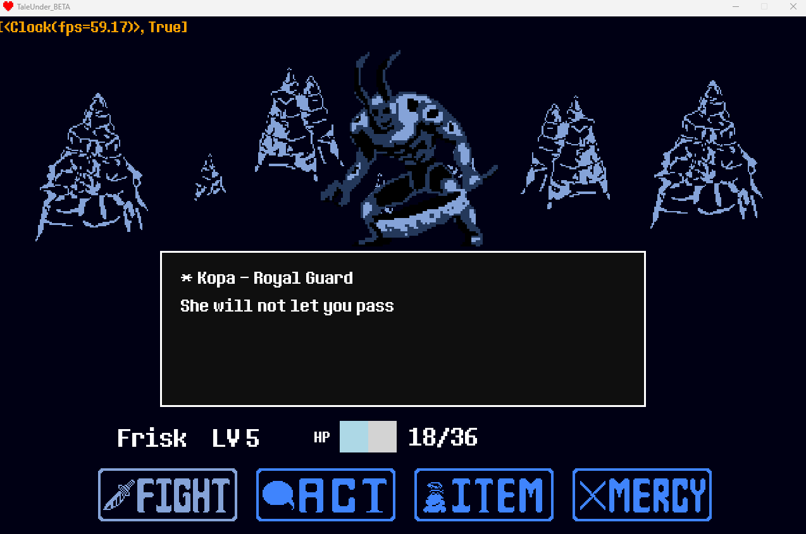

Professionnel
IHM Pymodaq
Interface d'acquisition de données pour un banc de test de l'unité de recherche du CETHIL, développée avec le framework Pymodaq.
Voir le détailMon travail
Une sélection de projets académiques et professionnels, du logiciel scientifique au jeu vidéo.
Interface d'acquisition de données pour un banc de test de l'unité de recherche du CETHIL, développée avec le framework Pymodaq.
Voir le détail
Jeu amateur reprenant les mécaniques d'Undertale : combat au tour par tour, dialogues et déplacement entre zones.
Voir le détail
Jeu au tour par tour dans un monde semi-ouvert, construit en Python selon une architecture MVC.
Voir le détail
Logiciel de recherche d'un mot dans une base CSV, via les algorithmes Naïf et Boyer-Moore-Horspool, avec interface Tkinter.
Voir le détail